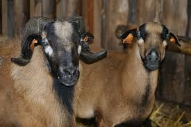
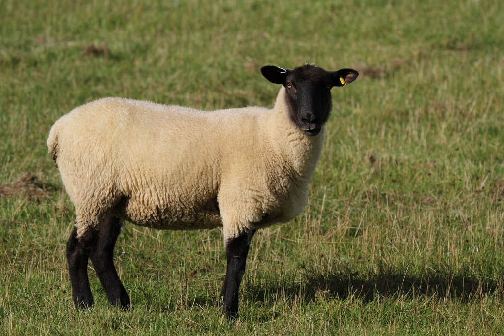

- 
Barany
- 
Czarnogłówka

Czarnogłówka z jagnięciem

Owca pospolita

Owce Kameruńskie

Owce z wysp owczych
Barany
Czarnogłówka
Czarnogłówka z jagnięciem
Owca pospolita
Owce Kameruńskie
Owce z wysp owczych
Owca - gatunek ssaka parzystokopytnego z rodziny wołowatych (Bovidae). Zawiera szereg podgatunków
Owca domowa - (Ovis aries) – gatunek hodowlanego zwierzęcia domowego z rodziny wołowatych. Jej przodkiem były najprawdopodobniej różne podgatunki owcy dzikiej
O archipelagu Wysp Owczych nieco już opowiedziałam. Obraz tego zielonego, osnutego mgłą miejsca pozostaje jednak niepełny bez przyjrzenia się bliżej jego najliczniejszym mieszkańcom. Mowa oczywiście o wszechobecnych tu owcach, związanych nie tylko z nazwą, ale historią, kulturą jak i codziennością archipelagu. Oto zatem nieco luźnych informacji i ciekawostek na temat farerskich kudłaczy i towarzysząca im galeria tych uroczych stworzeń.
Podczas gdy zaludnienie Wysp Owczych wynosi niespełna 50 tysięcy, liczba żyjących tam owiec przekracza 70 tysięcy. I choć na miejscu można odnieść wrażenie, że ludzi jest tam jeszcze mniej, tak wszędobylskie owce pojawiają się nawet w najbardziej zaskakujących miejscach, stając się tym samym nieodłącznym, choć nieświadomym tego faktu towarzyszem podróży. I choć zwierzęta są tu tak powszechne, trudno mówić o monotonii, bowiem Farerczycy rozróżniają aż 300 wariantów ich umaszczenia, a każde z nich doczekało się własnej nazwy!